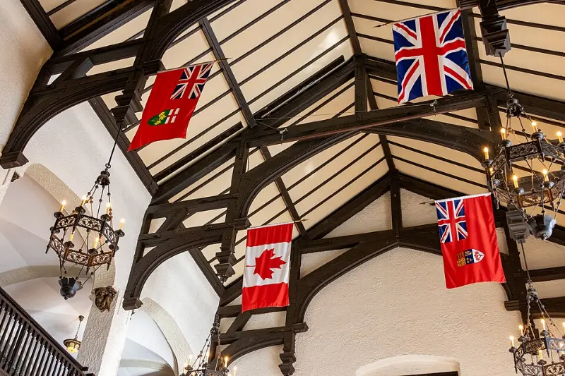
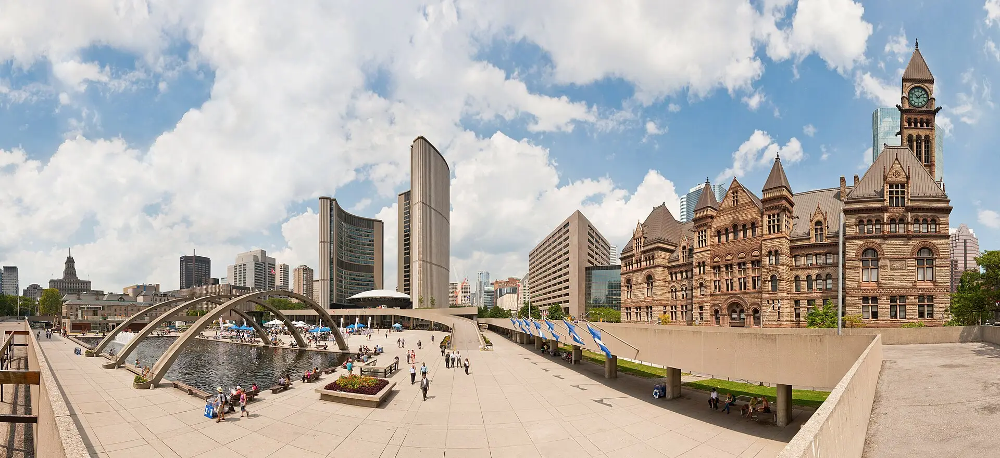
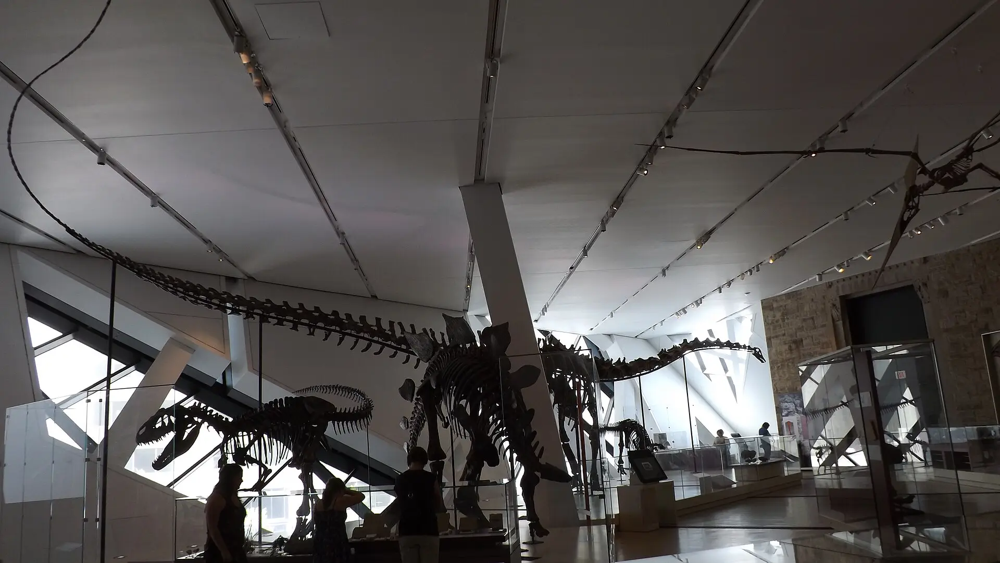
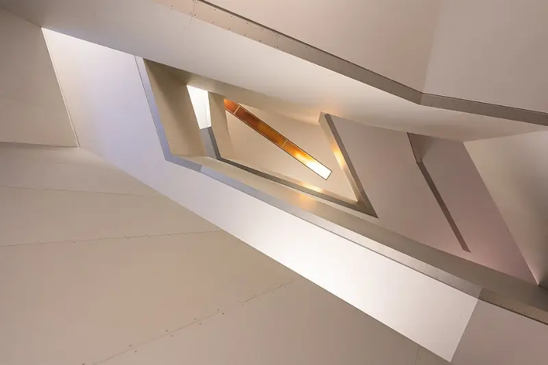

World 02 of 04 · Ontario
Culture
Culture & Iconic Places Icons. History. Art. City life.
- 06Experiences
- 02Collections
- 01Region
Photo — Toronto skyline from Polson Pier

Culture & Iconic Places
The stories that
shape a province.

Photo — Toronto skyline from Centre Island
Collection 01
Landmarks




Nathan Phillips Square
Toronto, Ontario
Why go
- Region
- Category

Photo — Royal Ontario Museum · Barosaurus
Collection 02
Museums & Art


Next world · 03
Flavours
Food & Local Experiences